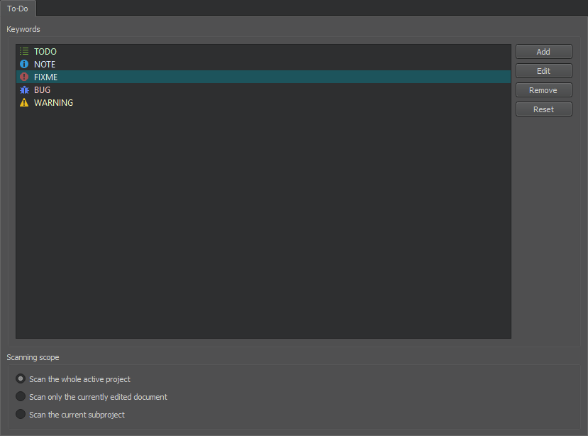

Viewing Output

The task pane in Qt Creator can display one of the following panes:
- Issues
- Search Results
- Application Output
- Compile Output
- QML Debugger Console
- General Messages
- Version Control
- Test Results
- To-Do Entries
Output panes are available in all modes. Click the name of an output pane to open the pane. To maximize an open output pane, click the Maximize Output Pane button or press Alt+9.
To search within the Application Output and Compile Output panes, press Ctrl+F when the pane is active. Enter search criteria in the Find field and click the left and right arrows to search down and up in the pane. In these panes, you can also use the zoom buttons to increase and decrease the text size of the output.
To open the General Messages and Version Control panes, select Window > Output Panes. To display the To-Do Entries pane, enable the Todo plugin. For more information about the QML Debugger Console view, see Executing JavaScript Expressions.
Issues
The Issues pane provides lists of following types of issues:
- Build System - Errors and warnings encountered during a build.
- Clang Code Model - Errors and warnings from the current editor.
- Compile - Selected output from the compiler. Open the Compile Output pane for more detailed information.
- Debug Information - Lists debug information packages that might be missing.
- Debugger - Errors encountered while running the Valgrind code analysis tools.
- Debugger Runtime - Errors encountered when starting Qt Creator. For example, information about missing DLLs.
- Deployment - Errors encountered between building an application successfully and starting it on a device.
- My Tasks - Entries from a task list file (.tasks) generated by code scanning and analysis tools.
- Python - Runtime errors and exceptions of Python scripts.
- QML and QML Analysis - QML and JavaScript syntax errors.
The pane filters out irrelevant output from the build tools and presents the issues in an organized way. To further filter the output by type, select Filter Tree and then select a filter.

Right-clicking on a line brings up a context menu with actions that you can apply to the contents of the line. You can remove a line, copy its contents to the clipboard, or search the Internet for a solution using the contents of the line as search criteria. In addition, you can show a version control annotation view of the line that causes the error message.
To navigate to the corresponding source code, click an issue or select Show in Editor in the context menu. The entry must contain the name of the file where the issue was found.
To view more information about an issue in the Compile Output pane, select Show Output in the context menu.
To jump from one issue to the next or previous one, press F6 and Shift+F6.
Search Results
In the Search Results pane, you can search through projects, files on a file system or the currently open files:

The search results are stored in the search history (1) from which you can select earlier searches.
The figure below shows an example search result for all occurrences of the search string in the specified directory.

For more information about the different search options, see Finding and Replacing.
Application Output
The Application Output pane displays the status of a program when it is executed, and the debug output.

If you specify command line arguments in the run settings that are passed to the application when running it, they are displayed as a part of the application output. For more information, see Specifying Run Settings for Desktop Device Types. Select toolbar buttons to run applications, to attach the debugger to the running application, and to stop running or debugging.
To specify settings for displaying application output, select Tools > Options > Build & Run > General. You can select whether to open the Application Output pane on output when running or debugging applications, to clear old output on a new run, to word-wrap output, and to limit output to the specified number of lines.
Compile Output
The Compile Output pane provides all output from the compiler. The Compile Output is a more detailed version of information displayed in the Issues pane.

Double-click on a file name in an error message to open the file in the code editor.
Select the Cancel Build button to cancel the build.
To specify whether to open the Compile Output pane on output when building applications, select Tools > Options > Build & Run > General, and then select the Open Compile Output pane when building check box. In the Limit build output to field, you can specify the maximum amount of build output lines to display in the pane.
To-Do Entries
The To-Do Entries pane lists the BUG, FIXME, NOTE, TODO, and WARNING keywords from the current file, from all project files, or from a subproject. Click the icons on the toolbar to show only the selected keywords.

To add keywords, select Tools > Options > To-Do > Add. Set an icon and a line background color for the keyword.

To change the icon and line background color of the selected keyword, select Edit.
To remove the selected keyword, select Remove.
To reset the list to predefined keywords, select Reset. All your changes will be permanently lost.
To determine whether the keywords in the whole project, in the current file, or in a subproject are displayed by default, select the appropriate option in the Scanning scope group.
To exclude files from scanning, select Project Settings > To-Do in the Projects mode. Select Add and enter a regular expression that matches the path to files to exclude. Use a forward slash (/) as a separator in the path also on Windows.
The Todo plugin is disabled by default. To enable the plugin, select Help > About Plugins > Utilities > Todo and restart Qt Creator.
In addition, you can open task list files generated by code scanning and analysis tools in the Issues pane. For more information, see Showing Task List Files in Issues Pane.
Changing Languages
Qt Creator has been localized into several languages. If the system language is one of the supported languages, it is automatically selected. To change the language, select Tools > Options > Environment and select a language in the Language field. The change takes effect after you restart Qt Creator.
Viewing Images
Qt Creator opens image files in the image viewer.

Use the toolbar buttons (1) or keyboard shortcuts to:
- Export SVG images to pixmaps
- Switch between background and outline modes
- Zoom in and out
- Fit images to screen
- Return to original size
- Play and pause animated GIF and MNG images
Exporting SVG Images
If you receive a freely scalable icon in the SVG format from an UI designer, you can export it to several images of different sizes to create a set of pixmaps. You can then use QIcon::addPixmap() to add the pixmaps to icons in different modes and states.